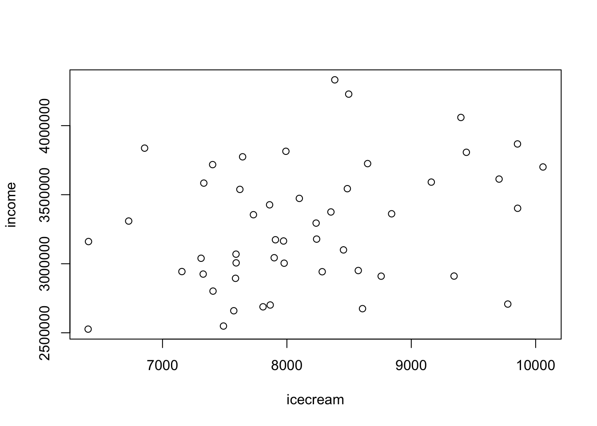

rm(list = ls())
needs(tidyverse, magrittr)3章
パッケージのロード
問題3.1
2つの確率変数X,Yについて，XとYが独立であるとき
1. \(\textrm{Var}(X+Y)\)
\[ \begin{split} Var(X+Y) &= Cov(X+Y)(X+Y) \\ &=Cov(X,X)+Cov(Y,Y)+2Cov(X,Y) \\ &= Var(X) + Var(Y) \end{split} \]
2. \(\textrm{Var}(X-Y)\)
\(Z = -Y\)とすると，
\[ Var(Z) = Var(-Y) = (-1)^2Var(Y) = Var(Y) \]
これを利用して
\[\begin{split} Var(X+Z) &= Cov(X+Z)(X+Z) \\ &=Cov(X,X)+Cov(Y,Y)+2Cov(X,Z) \\ &= Var(X) + Var(Z) \\ &= Var(X) + Var(Y) \end{split}\]
問題 3.2
データの読み込み
tempdata <- read_csv("R_EmpiricalAnalysis_csv/chap03/temperature.csv")- 項目
tempの全てを用いて，2014年の東京都の平均気温を計算
tempdata %$%
mean(temp)[1] 16.64065- 抽出し，計算
sub <- tempdata %>%
slice(1:100) #slice:データを指定の範囲で切り取る
mean(sub$temp)[1] 7.204- ランダム抽出
sub2 <- tempdata %>%
slice_sample(n = 100)
mean(sub2$temp)[1] 17.581問題3.3
icedata <- read_csv("R_EmpiricalAnalysis_csv/chap03/icecream.csv")1
icedata %>%
dplyr::select(city,icecream) %>%
arrange(-icecream)# A tibble: 49 × 2
city icecream
<chr> <dbl>
1 富山市 10059
2 金沢市 9855
3 浜松市 9854
4 鹿児島市 9776
5 宇都宮市 9706
6 福井市 9443
7 川崎市 9399
8 京都市 9344
9 相模原市 9161
10 山形市 8842
# ℹ 39 more rowsicedata%$%
which.max(icecream) [1] 17icedata %$%
plot(icecream,income) 
icedata %$%
cor(icecream,income)[1] 0.3113555問題3.4
1
S <- 1000
X <- rnorm(S, 50, 10)
rec <- numeric(S)
for(i in 1:S){
rec[i] <- (10 < X[i])
}
mean(rec)[1] 12
S <- 1000
X <- rnorm(S, 50, 10)
rec <- numeric(S)
for(i in 1:S){
rec[i] <- (-10 < X[i]) & (X[i] < 10)
}
mean(rec)[1] 03
S <- 1000
X <- rnorm(S, 50, 10)
Y <- rnorm(S, 50, 10)
rec <- numeric(S)
for(i in 1:S){
rec[i] <- (Y[i])^2 < X[i]
}
mean(rec)[1] 0問題3.5
S <- 10000
N <- 10000
rec <- numeric(S)
for(i in 1:S){
X <- rnorm(N,50,10)
Xbar <- mean(X)
Vn <- var(X)
lb <- Xbar - 1.64 * sqrt(Vn / N)
ub <- Xbar + 1.64 * sqrt(Vn / N)
rec[i] <- (lb < 50) & (ub > 50)
}
mean(rec)[1] 0.9045